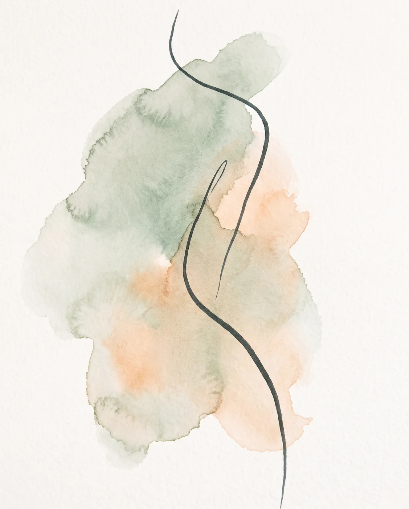
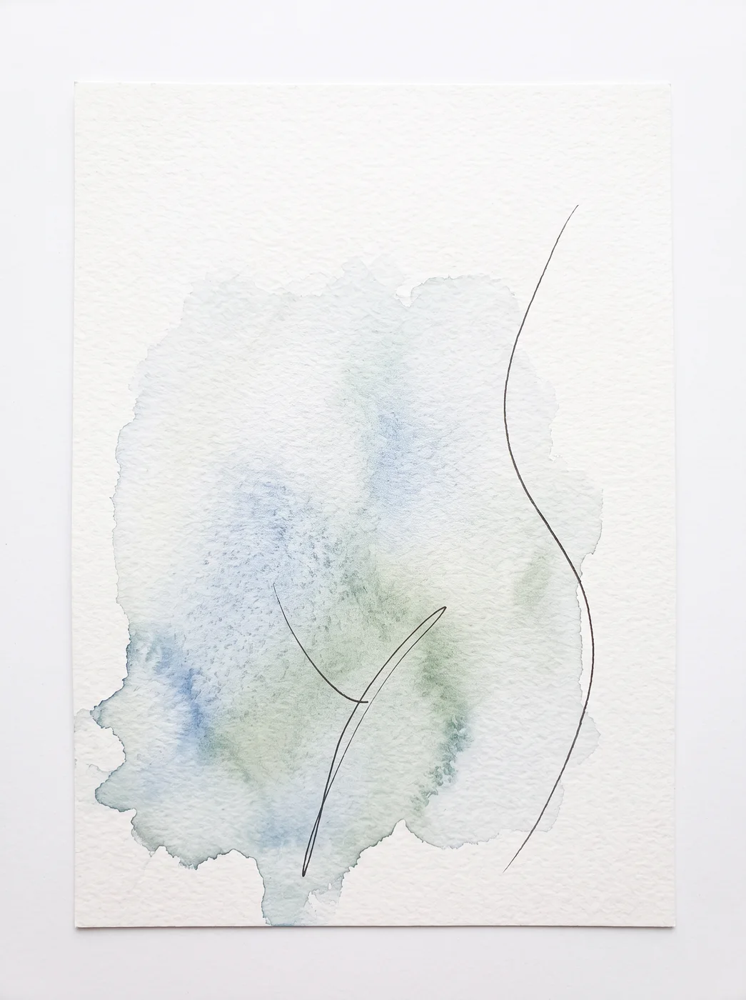
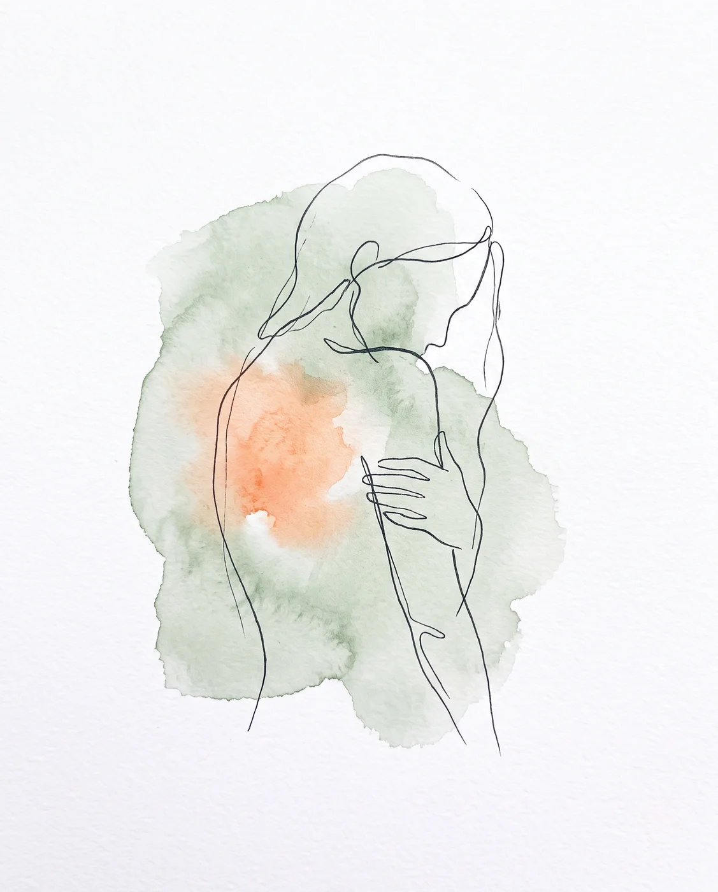
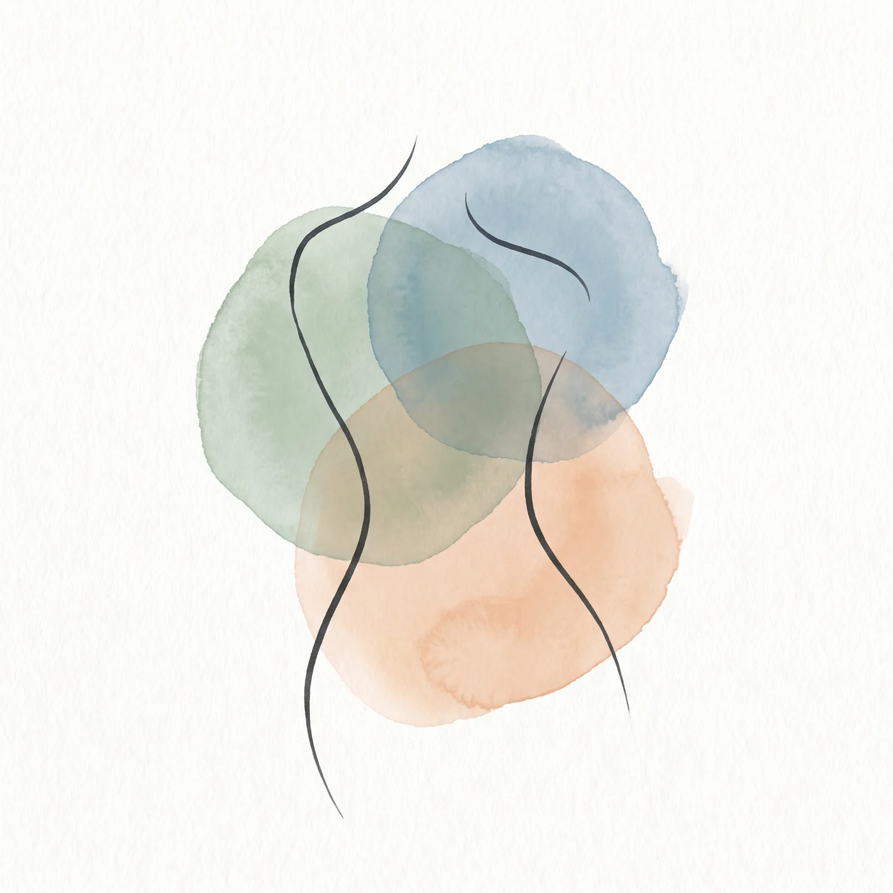

פסיכותרפיה גופנית־נפשית נשית
יש רגעים שבהם הגוף
יודע לפני ההבנה
לפעמים משהו מבקש תשומת לב ועוד לא ברור מה.
אני מלווה נשים בתקופות של מעבר,
בקצב שלהן, דרך הגוף, הרגש והנוכחות.


אשמח לקרוא מה שעל ליבך ולהקשיב לך
אפשר לכתוב גם בלי לדעת בדיוק מה לבקש. כמה מילים, מחשבה, שאלה. מה שבא.
הדברים נשלחים ישירות אליי בלבד ונשמרים בדיסקרטיות מלאה
תודה שכתבת.
אחזור אלייך בקרוב.
מעדיפה לדבר? 054-8121717 או בוואטסאפ

אולי את מכירה את זה
יש נשים שלמדו מוקדם מאוד להסתדר לבד.
לא כי הן רצו אלא כי ככה היה צריך.
וזה עבד. זה הביא אותן רחוק.
לפעמים, שנים אחר כך,
מגיע רגע שבו הדבר שהחזיק אותן
מתחיל להיות למעמסה כבדה מאד.
עייפות שלא עוברת גם אחרי מנוחה
קושי לבקש עזרה, גם כשיש סביבך אנשים
תחושה של ריצה שקשה לעצור אותה - הגוף מגיב פיזית ונחלש
שקט שנעדר, גם כשמבחוץ הכל מסודר
לא צריך שיהיה משבר כדי להגיע.
מספיק רצון להכיר את עצמך טוב יותר.
את מוזמנת
אלו הן כמה חוויות חיים שנשים מגיעות מהן. אולי אחת מהן תרגיש לך מוכרת
בין קריירה למשפחה
הימים מלאים והשאלה "ואיפה אני?" עולה בעיקר בשקט של הלילה.
בניית עסק או תפקיד
יודעת להוביל ולהחליט. לפעמים הגוף מבקש קצב אחר מזה שהראש קבע.
תחושת שחיקה
הכל ממשיך לזוז ובכל זאת יש ריקנות. עושה הרבה ומרגישה פחות משמעות.
תקופת מעבר או שינוי בזוגיות
לא במשבר וגם לא ממש בשקט. משהו מבקש מקום שעוד לא קיבל.
חיפוש אחר עומק
כבר היו כלים ותובנות. עכשיו מתבקש משהו שנוגע עמוק יותר.
בלי מילים
אין "בעיה" מסודרת. יש רק תחושה. זה מספיק כדי להתחיל.
לפעמים מגיעות אלי נשים עם חרדה, דיכאון או אובדן.
יש כאן מקום, במרחב טיפולי פתוח ומאפשר,
בזהירות ובקצב שנכון לך.

נעים מאוד, שמי אנה
הקמתי וניהלתי במשך שנים חברת הפקת סרטים ופרסומות עם בן זוגי,
בהמשך ליוויתי עסקים ובעלות עסקים כמאמנת.
אני מכירה מקרוב את הימים שמתחילים מוקדם ונגמרים מאוחר,
את האחריות שלא נגמרת
ואת ההרגשה שאם אני לא שם - אז אף אחד לא יהיה.
אני נשואה מעל 2 עשורים + 2 ילדים בוגרים,
היו כמובן אתגרים בקשר וצלחנו אותם.
במקביל נשאתי בגוף דברים שלא ידעתי לקרוא להם בשם,
במשך שנים ארוכות. ההחלטה לעצור ולהסתכל פנימה
הייתה אחת הקשות שקיבלתי.
אני יודעת כמה זה מפחיד ואני יודעת גם מה נמצא מהצד השני.
השלמתי שינוי משמעותי בקריירה, בתזונה, ביחס לגוף,
במערכות יחסים ובעיקר ביחס שלי לעצמי.
היום אני מלווה נשים בדיוק במקום שממנו הגעתי,
עם הכלים שלא היו לי אז.
אין שיטה אחת. יש את הדרך שלך.
ושם אנו נפגשות, אנה מיוחס.
רקע מקצועי
פסיכותרפיה גופנית־נפשית מבוססת מיינדפולנס, אוניברסיטת חיפה
התמקדות — פוקוסינג
אימון עסקי ואישי, ליווי עסקים ובעלי עסקים
הכשרת מורי יוגה, לימודי בודהיזם
מנחת תוכנית 16 המעלות, מטעם ארגון FDCW לפיתוח חמלה וחוכמה
ניסיון טיפולי במרכז רקמן, עמותת ניצן וקליניקה פרטית
הדרך נרקמת מכמה גוונים
כמו מכחול שנטבל בכמה צבעים ונפרש על הקנבס, כל מפגש מורכב אחרת.
יש קעריות שונות ובכל אחת מרכיבים שיכולים להירקם עבורך, לפי מה שמתבקש באותו רגע.
התמקדות
הקשבה לתחושה הפנימית לפני המילים
גוף
עבודה סומטית עם מה שהגוף כבר יודע ואוצר · SE
מיינדפולנס
נוכחות קשובה ולא שיפוטית ברגע הזה
רוח
מרחב להקשבה עמוקה יותר, למי שיש לה קריאה
אימון עסקי ואישי
שפת המעשה והעשייה
ווייס דיאלוג
היכרות עם הקולות השונים שחיים בתוכך
דמיון מודרך
דרך חווייתית להגיע למה שמתחת לפני השטח
השינוי כמנוף
תרגול שמלווה אותך גם בין המפגשים
יחד
הקשר הטיפולי בין המטפלת למטופלת

איך הכל מתחבר
כלים ושיטות משתלבים יחד לתמונה אחת.
במפגש אחד עולה לעיתים הקשבה לגוף, נוכחות וגם כלי אימוני מעשי,
לפי הצורך והדיוק, לפי ההתאמה לרגע ולמטופלת.
לא תבנית קבועה מראש, אלא הרמוניה של גוונים במשיכת מכחול מתוך פלטת הצבעים — בדיוק שנכון לך.
אני מחכה לך
במרחב שקט ומוגן, שבו אפשר לתת ללב להיפתח בקצב שלך.
פתח תקווה · My Clinic
ז'בוטינסקי 61, קומה גבוהה עם נוף פתוח
תל אביב
קליניקה נגישה במרכז העיר
בזום
מכל מקום, מהנוחות של הבית שלך
הקליניקה בפתח תקווה · ז'בוטינסקי 61, פתח תקווה
מה נשים כתבו לי על התהליך
"בכל מפגש הקשבת, תמכת, הצעת ואפילו דמעת בשבילי. זה ריגש אותי מאוד ונתן לי הרגשה שאני לא לבד."
איילת, 52
"הגעתי אלייך עם שאלות, עם חששות ועם משקעים לא פשוטים. בזכות הרגישות, החוכמה והסבלנות שלך מצאתי מקום בטוח לעבד, לצמוח ולהירפא."
מיכל, 45
"הגעתי לטיפול בתקופה מורכבת, כשחשתי בלבול וחוסר ביטחון. כבר מהמפגשים הראשונים הרגשתי שמצאתי מקום בטוח שבו אפשר לדבר על הכל, בלי שיפוטיות."
ענת, 39

סדנאות וקבוצות
לפעמים הריפוי קורה דווקא כשיש לידך נשים אחרות שמבינות אותך ונותנות קול לתחושות הלא מדוברות.
הדרך שלי מכאן
קבוצה לנשים בתהליכי פרידה וגירושין
פרידה היא אחד המעברים המורכבים שיש. גם כשזו ההחלטה הנכונה הגוף מרגיש את הטלטלה, וגם כשיש הקלה יש גם אובדן.
הקבוצה היא מרחב בטוח לנשים שנמצאות בתוך התהליך או אחריו, מקום לעצור, להרגיש, לשתף ולהכיר את עצמך מחדש.
מרחב להעלאת רגשות, תחושות והתלבטויות ללא שיפוטיות
דינמיקה קבוצתית שמאפשרת ראייה מזוויות חדשות
עבודה גופנית־נפשית מבוססת מיינדפולנס
כלים יישומיים ליצירת שינוי
קבוצה קטנה ואינטימית, שנים עשר מפגשים
המועד הקרוב טרם נקבע רוצה שאעדכן אותך? ←משלכת לצמיחה
יום אחד להניח ולהתחדש
בטבע, לפני שמשהו חדש צומח, יש רגע של השלה. העץ מרפה מהעלים לא כי משהו השתבש אלא כי זה מה שמאפשר את הבא.
יום שלם שמוקדש לשאלה מה כבר לא משרת אותך, ומה מבקש מקום לצמוח. בתנועה, ביצירה, בהקשבה ובדינמיקה קבוצתית.
עבודה חווייתית בגוף ובתנועה
יצירה כדרך להגיע למה שאין לו מילים
דינמיקה קבוצתית ושיתוף במעגל
כלים לקחת איתך הביתה
סדנת יום, קבוצה קטנה
המועד הקרוב טרם נקבע רוצה שאעדכן אותך? ←תזונת הניקוי האדומה
תהליך ניקוי ושינוי מערכת היחסים עם אוכל
עברתי את הסדנה הזו כמשתתפת. הגעתי עם גוף שהרגשתי שלא ממש מכירה, במיוחד בתקופת גיל המעבר, כשהמשקל עלה והכלים הישנים לא עבדו יותר.
מה שקיבלתי לא היה דיאטה. היה לי תהליך של חיבור מחדש. ללמוד להבחין בין רעב אמיתי לרעב רגשי, לשמוע מה הגוף רוצה, ולהפסיק את מעגל ההתמכרות למתוק. הורדתי 13 קילו, וזה לא הדבר החשוב ביותר - אלא זה שבניתי דרך חיים
ניקוי רעלים ב־30 יום עם ליווי מובנה
שחרור מתשוקות לסוכר ומאכילה רגשית
חיבור לאותות הגוף והבנת הצרכים שלך
ליווי קבוצתי עם ממד גוף־נפש
קבוצה קטנה, 30 יום
בהנחיית הילה אפללו · נטורופתית, מטפלת, מרצה וסופרת
המועד הקרוב טרם נקבע רוצה שאעדכן אותך? ←
שנעדכן אותך כשייפתח מחזור חדש?
אשלח לך הודעה אחת כשהתאריכים ייסגרו. בלי דיוור, בלי הצפה, ואפשר להסיר בכל רגע.
ממ"ד רגשי
מרחב מוגן לנשות מילואים ולמשפחות שנושאות אובדן. משרד הביטחון והביטוח הלאומי מכירים בזכאות לטיפול פרטני מסובסד עבור אלמנות, הורים, אחים ואחיות, יתומים וארוסות. אם את לא בטוחה מה מגיע לך, כתבי לי ונברר יחד.
מחשבות מהחדר
דברים שאני חושבת עליהם בין פגישה לפגישה.
אפשר פשוט לקרוא, להרהר, בלי ציפייה, בלי משימה. רק הזמנה למחשבה.
יש נשים ששורדות מאז שהן זוכרות את עצמן.
מבחוץ נראה שהכל מתנהל. קריירה, בית, ילדים ומי שצריך עזרה יודע לאן לפנות. כשמשהו משתבש, את הראשונה שמתייצבת. הסביבה מעריצה את החוזק ואת העובדה שאת מסתדרת.
אבל בפנים, כשכולם הולכים לישון, זה מרגיש אחרת.
הילדה שלמדה להסתדר לבד
העצמאות הזו לא נולדה מבחירה. היא נולדה מצורך.
אי שם בילדות למדת מוקדם מדי שלא תמיד יש על מי לסמוך. אולי היית צריכה לגדל את עצמך ולפעמים גם אחרים. אולי היו אכזבות מאנשים שהיו אמורים להגן. או שפשוט אף אחד לא היה פנוי מספיק.
במקום שבו היית אמורה להיות ילדה מוגנת, למדת שיעור כואב. אם אני לא אדאג לעצמי, אף אחד לא ידאג לי.
אז לבשת שריון.
מה השריון גובה
הוא עזר לך לשרוד ולהגיע רחוק. אבל בחיים הבוגרים הוא ניתק אותך מחלקים פנימיים חשובים, והפך לכלא שקוף.
בדידות עמוקה, גם כשאת מוקפת באנשים
תשישות שלא עוברת, כי הרעיון לבקש עזרה מעורר חרדה
קושי להישען, גם על מי שקרוב
שמירה על רגל אחת בחוץ, מחכה לאכזבה
ולעיתים גם חרדה או דיכאון, כשהמאמץ להחזיק לבד נמשך שנים
למה דווקא דרך הגוף
מי שלמדה לשרוד לבד מחזיקה את המתח בגוף. זה מתבטא בכיווץ בכתפיים, בצוואר, בבטן. בנשימה שטחית. בעייפות שלא עוברת אחרי שינה.
שיחה שנשארת בראש לפעמים נעצרת מול חומות ההגנה, כי הראש יודע להסביר ולהצדיק. הגוף פחות.
בעבודה הגופנית־נפשית לא רק מדברים על הקושי. עוזרים למערכת העצבים ללמוד מחדש איך מרגיש להרפות, בקצב שנכון לך.
בקשת עזרה היא לא חולשה.
היא האומץ להפסיק להילחם לבד.
ילדה שגדלה לבית שבו ההורים היו עסוקים מאוד, או שלא יכלו לתת את תשומת הלב שהיא הייתה זקוקה לה, למדה להעסיק את עצמה.
היא מצאה דרכים יצירתיות לא לחוש את החרדה שבלבדות ולימדה את המערכת הפנימית שלה שאפשר להסתדר לבד. מגיל צעיר היא הפכה לעצמאית.
לכאורה נשמע נהדר. אבל ילדה זקוקה לעיניים טובות ולקשר עמוק וכשזה לא מתקיים נבנית מערכת שכל תפקידה להגן.
מה קורה כשהיא גדלה
אותה ילדה תהפוך לרוב לאישה שנשענת רק על עצמה. תמיד בעשייה, ברדיפה אחר עוד הישג ועוד הוכחה. וזאת כדי לא לחוש את הבדידות.
ואם גדלת לצד ביקורת, למדת להפנים אותה. אפילו לא צריך שמישהו יבקר מבחוץ, כי הקול הזה כבר בפנים. ולמרות שאת מגיעה למה שרצית, אין שקט.
ובתפקיד ניהולי
כשצריך לנהל פרויקט מורכב, לתת מענה ללקוחות, להחליט תחת לחץ, התגובות האוטומטיות מופעלות.
לוקחת על עצמך את הכל
עובדת עד מאוחר כדי לעמוד במשימה
מתקשה לשים גבול
לא פנויה להקשיב לצרכים שלך
לרוב מופעלים החלקים ההישרדותיים ולא ניתנת גישה לאותם חלקים שלמדו לשתוק שנים רבות.
יש דרך אחרת
הריפוי דורש חקירה עדינה, בעיניים טובות וסקרניות, ללא שיפוט. מסע היכרות מחודש שמגלה חלקים שהודחקו, רגשות שמבקשים להיאמר ואמת שמבקשת להתגלות.
הריפוי קורה כמעט מעצמו, כי הגוף יודע והרגשות לא משקרים.
המיינד עסוק רוב הזמן בלגונן עלייך, למרות שאולי זמן המלחמה עבר כבר מזמן.
יש החלטה שמחכה לך. לקוח שמבקש הצעת מחיר, פרויקט שצריך לענות עליו, או שאלה גדולה יותר על כיוון.
את יודעת שצריך להחליט. הראש רץ בלופים, שוקל, מנתח, בודק שוב. עוד מידע, עוד התייעצות, עוד לילה שהמחשבות לא מרפות.
הראש דוחס תשובה
רובנו גדלנו על ההנחה שהחלטה טובה היא תוצאה של ניתוח מספיק. עוד נתונים, עוד טבלה, עוד ניתוח מהתואר והתשובה תצוץ.
אבל לפעמים הבעיה היא לא חוסר במידע. הבעיה היא שאין רגע של שקט שבו האינטואיציה יכולה להישמע.
הראש מהיר. הוא רוצה לסגור את אי הוודאות, אז הוא דוחס תשובה. וההחלטה שמתקבלת כך מרגיעה לשעה ואז הספק חוזר.
מה קורה כשעוצרים
הגוף יודע דברים שהראש עוד מעכל. הבטן שמתכווצת מול אפשרות מסוימת. הנשימה שנעצרת כשאת אומרת כן. הקלות שמציפה כשאת מדמיינת לא.
אלה לא חוסר רציונליות. אלה מידע.
בטיפול עוצרים רגע. וכשיש שקט, ההקשבה לאינטואיציה עולה ומתוכה מגיעה החלטה מדויקת יותר. לא במקום החשיבה אלא לצידה.
כשאין בהירות
לפעמים אין החלטה אחת שמחכה. יש ערפל. לא ברור מה בדיוק השאלה, לא ברור מה מפריע, ובטח לא ברור מה נכון.
חוסר הבהירות הזה מרגיש כמו כישלון, אבל הוא לא. לרוב הוא סימן שמשהו בפנים עוד לא קיבל מילים, ושהראש מנסה להחליט לפני שהספיק להקשיב.
במצב כזה המשימה הראשונה היא לא להחליט. היא לדייק את השאלה. כשהשאלה מתבהרת, התשובה כבר נמצאת שם לרוב.
כמה דברים שאפשר לנסות
לעצור לפני שעונים. אפילו לומר "אחזור אלייך בהמשך היום"
לשאול את הגוף ולא רק את הראש. לדמיין את ההחלטה ולשים לב מה קורה
לבדוק אם ההחלטה באה מתוך בהירות או מתוך רצון להימנע מפחד ישן
להבחין בין "לא בטוחה" לבין "לא נכון לי". אלה שתי תחושות שונות
וכשזה עמוק יותר
לפעמים הקושי הוא לא בהחלטה עצמה אלא בדפוס שרץ מתחת. פרפקציוניזם שנועד למנוע טעות, או קול פנימי שנחנק בשנים של ביקורת.
לא כדי ללמד אותך להחליט. אלא כדי לאפשר לך לשמוע את מה שאת כבר יודעת.
את מסתובבת בעולם עם תחושה שאת חייבת להחזיק את הכל. בנית חומות של עשייה מתמדת ושליטה, כי למדת מוקדם מדי שלא תמיד בטוח להזדקק או להראות פגיעות.
את שומרת בתוכך סוד של בדידות ומפחדת שאם תרפי לרגע הכל יתפרץ.
כשאנחנו נפגשות בחדר, אני לא מגיעה רק כמומחית שמחלקת עצות. אני מגיעה קודם כל כבת אדם.
כשהניסיון שלי פוגש את שלך
הריפוי לא קורה בזכות טכניקות מתוחכמות אלא בזכות המפגש האנושי.
גם לי יש היסטוריה של חיים ורגעים של חוסר אונים. כשאני מקשיבה לך אני לא רק שומעת מילים, אני מרגישה את המאמץ שאת משקיעה כדי להיות בסדר, כי אני מכירה אותו גם מבפנים.
זה מאפשר קשר שבו את לא צריכה להסביר הכל.
אני פשוט נמצאת שם איתך.
גם טעות היא חלק מהדרך
לפעמים דווקא כשאני לא מדייקת, כשאני מנסה לפתור מהר מדי ואת מרגישה שזה לא נוגע, שם קורה משהו חשוב.
בחיים אולי למדת שאי הבנה מסמנת סוף של קשר. כאן אפשר לומר "זה לא היה לי נעים", ולגלות שהקשר חזק מספיק כדי להכיל את זה.
להאט
הצעד הראשון לא דורש ממך להצליח בטיפול. הוא מתחיל ברגע שאנחנו עוצרות ואני אומרת בואי נלך לאט יותר ונחזור למה שקורה בתוכך.
הטיפול לא נועד לתקן אותך. הוא נועד לאפשר לך לצמוח מתוך מה שיש ולצאת עם תחושה שאת כבר לא לבד בתוך הסוד שלך.
יש רגע בטיפול שקשה לתאר אותו במילים. הרגע שבו מישהי מפסיקה להסביר.
לא כי נגמרו לה המילים, אלא כי היא מרגישה שכבר לא צריך. שמה שהיא מביאה מתקבל בלי שתצטרך להצדיק אותו, לארוז אותו יפה או לוודא שהוא הגיוני.
למה זה כל כך נדיר
רובנו רגילות להסביר את עצמנו. בעבודה, בבית, מול המשפחה. אנחנו מקדימות תרופה, מרככות, מנמקות. זה מנגנון חכם שנועד להגן.
אבל הוא גם עייף. וכשהוא פועל כל הזמן, אין רגע שבו פשוט אפשר להיות.
מה שקורה בחדר
המרחב הטיפולי הוא אחד המקומות הבודדים שבהם אין מה להוכיח. אפשר לבוא עם בלבול, עם סתירות, עם משהו שאת עצמך לא מבינה עדיין.
לא צריך להגיע מסודרת.
אפשר להגיע כמו שאת.
הקשב עצמו מרפא
לא כל שינוי מגיע מתובנה. חלק ממנו מגיע מהחוויה של להיות מוקשבת. של לגלות שאפשר להישען ושהעולם לא קורס.
עבור מי שלמדה שאין על מי לסמוך, זו חוויה מתקנת. ולפעמים היא הדבר המשמעותי ביותר בתהליך.
לתאם מפגש
שיחת היכרות ראשונה היא ללא עלות וללא מחויבות. זו הזדמנות לשאול, להכיר ולראות אם זה מרגיש נכון.
054-8121717 · anna@meyuhas.tv
פתח תקווה · תל אביב · זום